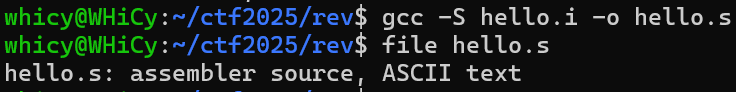
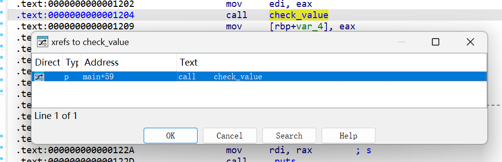

Rev Lab1：Rev基础¶
1 Task 1：编译流程¶
复现课上 hello.c 的编译执行流程，并撰写操作报告
- 需要体现预处理、编译、汇编、链接的流程
- 可以使用课上所说的 file / readelf 命令行工具查看文件信息并记录
我们准备简单的hello.c
步骤 1：预处理
预处理阶段主要处理源代码中以 # 开头的指令，例如 #include 和 #define。它会把头文件的内容插入到源文件中，并替换所有宏定义。
- 操作命令：
hello.i 是一个扩展后的 C 源码文件。我们可以查看它的文件类型。

file 命令确认了 hello.i 文件仍然是一个 C 源代码文件。用文本编辑器打开后发现 stdio.h 的内容已经被完整地包含进来了
步骤 2：编译
编译阶段将预处理后的 hello.i 文件翻译成汇编代码
- 操作命令：

file 命令告诉我们 hello.s 是一个汇编源文件。它是一个文本文件，用编辑器打开查看内容是 x86-64 架构的汇编指令。
步骤 3：汇编
汇编阶段使用汇编器将汇编代码 hello.s 转换成机器语言指令，并将这些指令打包成一种称为可重定位目标程序的格式。
- 操作命令：

hello.o是一个二进制文件，包含了可以直接在处理器上执行的机器码。 file 命令显示 hello.o 是一个 ELF 64-bit 格式的可重定位文件（relocatable）。使用 readelf 查看 ELF 头信息，输出清晰地表明了文件类型为 REL（可重定位文件），这与我们的预期相符。它还包含了文件的架构（X86-64）等重要信息。
步骤 4：链接
链接阶段是将 hello.o 这样的目标文件与程序所需的库文件（例如，printf 函数所在的 C 标准库）合并，最终创建一个可以被加载和执行的 可执行目标文件。
- 操作命令：
我们直接将 hello.o 文件传递给 gcc 进行链接。

file 命令显示 hello 是一个 ELF 64-bit 的可执行文件（executable）。dynamically linked 表示它在运行时需要动态链接器（/lib64/ld-linux-x86-64.so.2）来加载共享库。这次 readelf 显示文件类型为 EXEC（可执行文件），并且给出了程序的入口点地址（Entry point address），这是操作系统开始执行程序代码的位置。
步骤 5：执行程序

2 Task 2：工具使用¶
熟悉静态分析工具 IDA 的操作，并撰写操作报告
- 可以用课上的程序示例
- 报告中可以体现的是 IDA 的常见功能、某些快捷键的使用过程以及你觉得对你未来使用 IDA 有帮助的小技巧或者笔记
编写了一个简单的示例程序auth.c
#include <stdio.h>
#include <stdlib.h> // For atoi
#include <string.h>
int check_value(int val) {
if (val == 1337) {
return 1; // Success
} else {
return 0; // Failure
}
}
int main(int argc, char* argv[]) {
if (argc != 2) {
printf("Usage: %s <number>\n", argv[0]);
return -1;
}
int input_val = atoi(argv[1]);
int result = check_value(input_val);
if (result == 1) {
printf("Access Granted.\n");
} else {
printf("Access Denied.\n");
}
return 0;
}
- 函数窗口 (Functions Window) ：在界面左侧的函数窗口中，可以看到 IDA 识别出的所有函数列表。滚动找到
main 函数。 -
跳转到函数：双击
main 函数，中间的反汇编视图会立刻跳转到main 函数的起始地址。 3. 图形视图：在反汇编视图中，按一下
3. 图形视图：在反汇编视图中，按一下空格键 代码会从文本形式切换为流程图形式。代码块由方框表示，执行流由箭头表示。在main 函数的图形视图中，我们可以清晰地看到if (argc!= 2) 和if (result == 1) 对应的条件分支结构。
- 绿色箭头：条件为真 (True) 时的跳转。
- 红色箭头：条件为假 (False) 时的跳转。
- 蓝色箭头：无条件跳转。
交叉引用
交叉引用可以帮助我们快速找到一个函数在何处被调用，或者一个数据（如字符串）在何处被使用。
- 在
main 的代码中，我们看到一个call check_value 的指令。 - 单击选中
check_value 这个名称，然后按下 X 键。 -
IDA 会弹出一个交叉引用列表，显示所有调用
check_value 的位置。在本例中，它会显示main+59，表示main 函数调用了它。双击列表项即可跳转过去。 4. 同样，我们可以在反汇编视图中找到字符串
"Access Granted."。选中它并按 X 键，IDA 会告诉我们这个字符串在main 函数的printf 调用中被引用。
重命名与注释
为了使分析过程更易于理解和回溯，IDA 允许我们重命名变量、函数，并添加注释。
- 重命名 ：IDA 自动识别的
check_value 函数可能被命名为sub_11B5 之类的默认名称。可以选中函数名，按下 N 键，在弹出的对话框中输入一个更有意义的名称，如check_value。这会更新整个反汇编数据库中所有对该函数的引用。 - 添加注释：在一个复杂的逻辑块旁边，我们可以添加注释来解释它的功能。将光标定位到某一行代码，按下
: 键 。这会弹出一个可重复注释的输入框，非常适合为代码块写下详细解释。如果只是想添加一个简单的单行注释，可以使用 ; 键。
| 快捷键 | 功能 | 使用场景与技巧 |
|---|---|---|
Spacebar |
切换文本/图形视图 | 在图形视图下宏观把握逻辑，在文本视图下查看细节。是分析流程中最常用的快捷键。 |
X |
查看交叉引用 | 用于追踪函数调用链和数据流向。 |
N |
重命名 | 给函数、变量、地址起个有意义的名字，能极大提升分析效率，让冰冷的代码变得可读。 |
: / ; |
添加注释 | |
G |
跳转到地址/函数 | 快速导航。 |
Esc |
后退 | IDA 会记录你的跳转历史，按Esc可以像浏览器返回上一页一样，回到之前的位置。 |
F5 |
反编译为伪代码 | 能将汇编代码一键转换为可读性极高的 C 语言伪代码。 |
笔记与心得：
-
对于大多数程序，分析
main 函数是最佳起点。理解了主逻辑后，再深入到被调用的各个子函数中。 -
当遇到一个陌生的函数调用时，不要急着深入分析它。先看看它的交叉引用，了解它在整个程序中的作用和调用上下文，可以判断其重要性。
- 在分析一个新函数时，第一眼先看图形视图。它可以让你在几秒钟内了解函数的基本结构：是否有循环？有多少个条件分支？复杂度如何？
- 花时间重命名和注释，不是浪费时间，而是对未来自己（或同事）的投资。一个标记清晰的 IDA 数据库，价值远超一个原始的数据库。
了解动态调试工具 GDB 的操作，并撰写操作报告
- GDB 课上演示的内容较少，希望大家能够查阅资料自己学习常见的 gdb 调试命令
- 原版的 GDB 使用较为麻烦，这里推荐 pwndbg/gef 等 gdb 插件
- 报告中可以体现的是 gdb 的常见命令、插件的使用过程等等
断点告诉 GDB 在程序的特定位置暂停执行。break <位置> 或 b <位置>我们希望程序在 main 函数开始时停下来b main。Pwndbg 会确认断点已在 auth.c 的第 12 行设置，也可以直接通过行号设置断点，例如 b 18 会在调用 check_value 函数的那一行设置断点。
设置好断点后，就可以开始运行程序， run 或 r。如果程序需要命令行参数，直接跟在 run 命令后面。程序开始执行，并在我们设置的 main 函数断点处暂停。此时，Pwndbg 的上下文窗口会更新，显示程序在 main 函数第一行暂停时的状态。
next 或 n: 步过 (Step Over) 。执行当前行。如果当前行是函数调用，它会执行整个函数，然后停在下一行，不会进入函数内部。
step 或 s: 步入。执行当前行。如果当前行是函数调用，它会暂停在被调用函数的第一行。
continue 或 c: 继续。继续执行程序，直到遇到下一个断点或程序结束。
finish: 完成函数。继续执行，直到当前函数返回，并暂停在函数返回后的下一条指令。
打印变量: print <变量名> 或 p <变量名>连续按 n 几次，让程序执行到 int result = check_value(input_val); 之后。然后可以查看 result 和 input_val 的值。
输出将会是 $1 = 123 和 $2 = 0，证明程序逻辑正确。
内存查看 : Pwndbg 提供 telescope 命令来查看内存。例如，可以查看栈顶的内存数据：telescope $rsp这会显示栈上的内容，并自动解析指针指向的数据。
演示一个完整的调试场景：
-
gdb ./auth -
b check_value (在check_value 函数入口下断点) -
r 1337 (使用正确的 "密码" 运行) - 程序在
check_value 函数停下。Pwndbg 上下文显示我们已进入该函数。 -
p val (检查传入的参数val)- 输出:
$1 = 1337。参数正确。 -
n (执行if 判断) -
finish (执行完check_value 函数并返回) - 此时程序回到
main 函数调用check_value 的下一行。 -
p result (检查check_value 的返回值) -
输出:
$2 = 1。返回值正确。 -
c (继续执行) - 程序打印 "Access Granted." 并正常退出。
- 输出:
常用命令h汇总¶
-
设置断点
break main -
启动程序
run -
继续执行程序
continue -
单步执行程序，跳过函数调用
next -
单步执行程序，进入函数调用：
step -
显示函数调用栈
backtrace -
显示内存中的内容
x/16x \$rsp -
设置变量的值
set \$rax \= 0xdeadbeef -
显示当前上下文信息
context -
显示堆信息
heap -
显示一段内存区域的内容
telescope -
显示二进制文件中可用的 ROP gadget
ropgadget -
在内存中搜索指定的字符串或模式
search "hello" -
将汇编指令转换成机器码
asm -
显示断点信息
breakpoints -
显示进程的虚拟内存映射
vmmap -
生成用于缓冲区溢出的模式字符串
pattern
3 Task 3：例题复现¶
3.1 Reverse1¶
将可执行文件拖进IDA，反汇编得到以下结果
int __cdecl __noreturn main(int argc, const char **argv, const char **envp)
{
_BYTE v3[30]; // [esp+14h] [ebp-3Ch] BYREF
_BYTE v4[26]; // [esp+32h] [ebp-1Eh] BYREF
unsigned int i; // [esp+4Ch] [ebp-4h]
qmemcpy(v4, "MMMwjau`S]]S}ybS?4:;5:<4<q", sizeof(v4));
printf("Please input flag: ");
scanf("%s", v3);
for ( i = 0; i < 0x1A; ++i )
{
if ( (v3[i] ^ 0xC) != v4[i] )
{
printf("Your flag is not right.");
exit(0);
}
}
printf("You are right!");
exit(0);
}
程序的基本逻辑是加载一个 26 字节的加密字符串 v4，对于用户输入的flag，取用户输入的第 i 个字符（v3[i]），与十六进制数 0xC 进行异或运算，然后将结果与v4[i]进行比较。由于异或运算的性质，我们只要重复这个过程即可获得flag写一个简单的脚本
secret = "MMMwjau`S]]S}ybS?4:;5:<4<q"
key = 0xC
flag = ""
for char in secret:
decrypted_char = chr(ord(char) ^ key)
flag += decrypted_char
print(flag)
得到对应flagAAA{fmyl_QQ_qun_386796080}Reverse1通过截图，附件包含crack.py

3.2 simple_RE¶
相似的流程，关键的两个函数核心的思想是将输入字符串进行base64加密后与指定字符串进行比较，唯一需要注意的是加密非标码，而是进行了相应替换
int __fastcall main(int argc, const char **argv, const char **envp)
{
int v4; // [rsp+24h] [rbp-44h] BYREF
void *Buf1; // [rsp+28h] [rbp-40h] BYREF
char v6[56]; // [rsp+30h] [rbp-38h] BYREF
sub_401770(argc, argv, envp);
printf("please input the flag:");
scanf("%s", v6);
Buf1 = 0LL;
sub_401570(v6, &Buf1, &v4);
if ( !memcmp(Buf1, a5mc58bphliax7j, v4) )
printf("\nsuccess!");
else
printf("\nfailed!");
if ( Buf1 )
free(Buf1);
return 0;
}
写一个类似的脚本，得到对应flagNSSCTF{a8d4347722800e72e34e1aba3fe914ae}，附件包含exploit.py
import base64
def decode_with_maketrans():
c1 = "qvEJAfHmUYjBac+u8Ph5n9Od17FrICL/X0gVtM4Qk6T2z3wNSsyoebilxWKGZpRD"
c2 = "ABCDEFGHIJKLMNOPQRSTUVWXYZabcdefghijklmnopqrstuvwxyz0123456789+/"
enc = "5Mc58bPHLiAx7J8ocJIlaVUxaJvMcoYMaoPMaOfg15c475tscHfM/8=="
translation_table = str.maketrans(c1, c2)
standard_b64_str = enc.translate(translation_table)
decoded_bytes = base64.b64decode(standard_b64_str)
return decoded_bytes
result = decode_with_maketrans()
print(result)